How to read this. Every section follows the same pattern: a simple idea, an everyday example, the formula (every symbol explained), a graph, then what the graph shows in numbers. New words are explained in a blue Key words box the first time they appear. Every number in this document comes from running the code.
Simple idea. A controller is a loop that repeats four steps, many times per second: look (measure where you are), compare (how far from the target?), act (push to shrink the gap), repeat. It never needs to know the full physics. It only reacts to the gap.
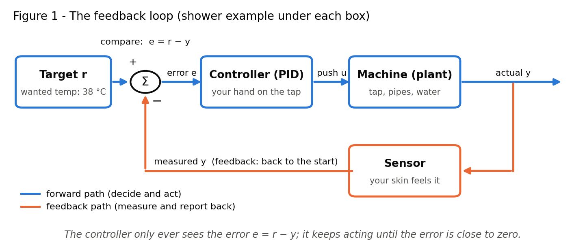
Why feedback? Open loop only works if you know the machine perfectly. If the boiler gets hotter, a tap set once gives the wrong temperature and never notices. Feedback notices and corrects. Section 3 shows this with numbers.
Simple idea. PID is three helpers. Each looks at the error in a different way, and their pushes are added up.
| Symbol | Meaning | Unit (for our block) |
|---|---|---|
| u(t) | controller output: the push sent to the motor | N (newton) |
| e(t) | error = target − measured position | m |
| ∫e dt | "integral": the area under the error curve so far = error added up over time | m·s |
| de/dt | "derivative": how fast the error is changing (its slope) | m/s |
| Kp | proportional gain: newtons of push per metre of error | N/m |
| Ki | integral gain: newtons per (metre × second) of built-up error | N/(m·s) |
| Kd | derivative gain: newtons per (metre/second) of error change | N·s/m |
| t, dt | time, and the small time step between computer updates | s |
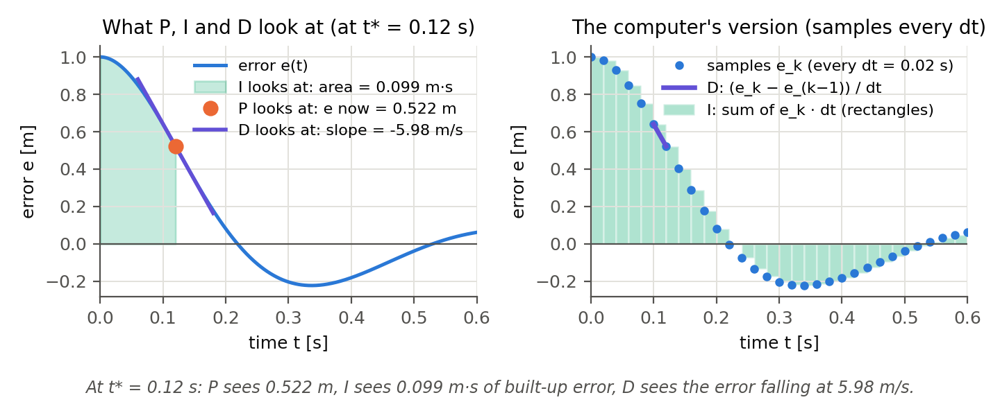
The step-by-step version a computer runs. A computer cannot do smooth calculus. Every dt seconds it does this:
every dt seconds:
error = target - measured # how far are we?
integral = integral + error * dt # add one thin rectangle to the area (I)
derivative = (error - previous_error) / dt # change since last time, per second (D)
u = Kp*error + Ki*integral + Kd*derivative
previous_error = error # remember for next time
send u to the motor
Simple idea. We control a 1 kg block attached to a wall by a spring and a damper. The motor pushes the block. We want it to sit at x = 1 m.
Newton's second law says: mass × acceleration = sum of forces. Three forces act: the motor push u, the spring pulling back (k·x), and the damper resisting speed (c·ẋ):
Why a constant push is needed to hold 1 m. When the block is resting, it does not move (ẋ = 0) and does not speed up (ẍ = 0). The equation becomes k·x = u, so u = 20 N/m × 1 m = 20 N. The spring is stretched and pulls back with 20 N; if the motor stops pushing, the spring pulls the block back to 0. Like holding a door open against a door-closer: you must keep pushing even when nothing moves.
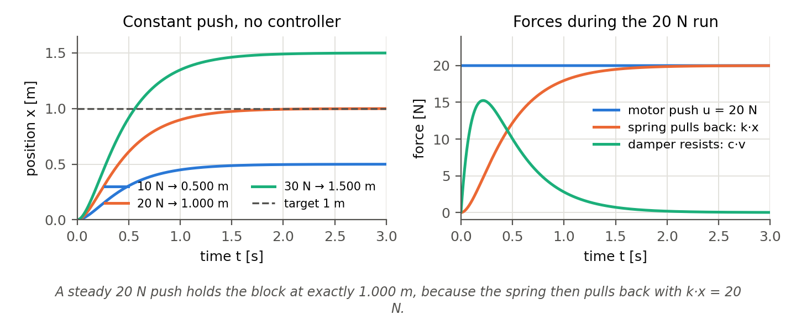
How we simulate it: the code (pid_control/plant.py) moves the block forward in 1 ms steps using the
Runge–Kutta 4 method (it checks the slope 4 times inside each step and averages them; far more accurate than one simple step).
Simple idea. A good response is fast, does not go too far past the target, calms down soon, and ends in the right place.
| Measure | Definition | Unit |
|---|---|---|
| ① Rise time tr | time to go from 10 % to 90 % of the final value | s |
| ② Overshoot OS | (peak − final value) ÷ final value × 100 | % |
| ③ Settling time ts | time after which the response stays inside ±2 % of the final value | s |
| ④ Steady-state error ess | target − final value (where it finally stops) | m |
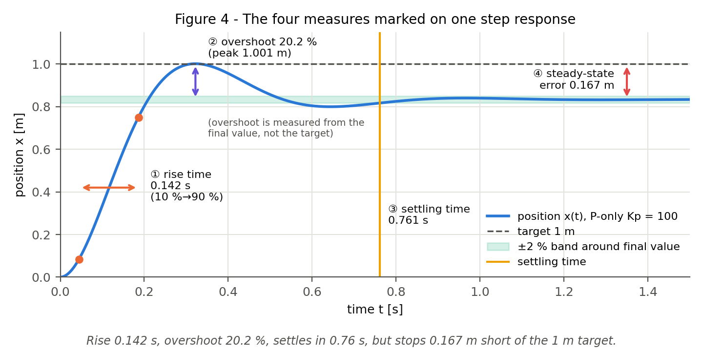
Simple idea. Push harder the further you are from the target. Example: pressing the accelerator harder the further your speed is below the limit.
Calculation (where it stops). At rest, ẋ = ẍ = 0, so the motor push must equal the spring force:
Calculation (how much it bounces). Putting u = Kp(1 − x) into the block's equation gives ẍ + 10ẋ + (20 + Kp)x = Kp. So Kp acts like a stiffer spring, but the damper stays the same. The damping ratio ζ = c / (2√(m(k + Kp))) tells us how bouncy it is (ζ ≥ 1: no bounce; small ζ: lots of bounce); predicted overshoot = e−πζ/√(1−ζ²) × 100 %.
| Kp [N/m] | xss theory [m] | xss simulated | ess [m] | ζ | OS theory | OS simulated |
|---|---|---|---|---|---|---|
| 10 | 0.3333 | 0.3334 | 0.667 | 0.913 | 0.09 % | 0.08 % |
| 30 | 0.6000 | 0.6000 | 0.400 | 0.707 | 4.32 % | 4.35 % |
| 100 | 0.8333 | 0.8333 | 0.167 | 0.456 | 19.96 % | 20.17 % |
| 300 | 0.9375 | 0.9375 | 0.063 | 0.280 | 40.07 % | 40.67 % |
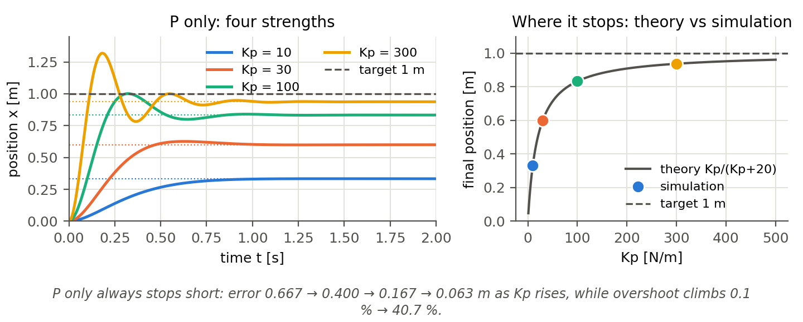
Simple idea. I remembers. While any gap remains, its push keeps growing. Example: cruise control on a hill slowly adds throttle until the speed is exactly right.
Calculation. At rest, the I part can only stop changing if the error is exactly zero (otherwise ∫e dt keeps growing). With zero error, P gives 0 N, so the I part alone must supply the full spring force: Ki·∫e dt = k × 1 m = 20 N.
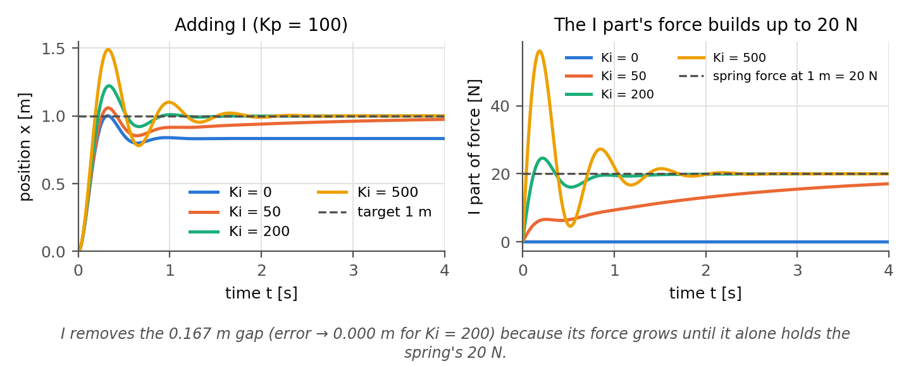
Simple idea. D pushes against fast motion. Example: on a bicycle you squeeze the brakes before the stop line, harder the faster you are going.
Calculation. The target is fixed, so the error changes only because the block moves: de/dt = −ẋ. The D part is then −Kd·ẋ, which is exactly a damper force. So:
| Kd [N·s/m] | 0 | 5 | 10 | 20 |
|---|---|---|---|---|
| ζ (Kp = 300) | 0.280 | 0.419 | 0.559 | 0.839 |
| overshoot, theory | 40.07 % | 23.44 % | 12.03 % | 0.79 % |
| overshoot, simulated | 40.67 % | 23.75 % | 12.12 % | 0.73 % |
| settling time, simulated | 0.777 s | 0.469 s | 0.326 s | 0.229 s |
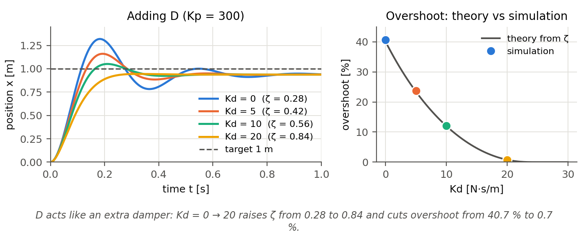
Simple idea. Each part fixes one weakness: P gives speed, I removes the final gap, D removes the bounce. We now compare them fairly: all four use the same Kp = 300, then add I and/or D.
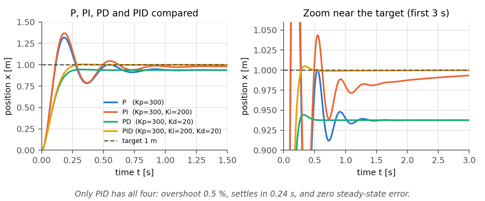
| Controller (gains) | Rise time | Overshoot | Settling time | Steady-state error |
|---|---|---|---|---|
| P (Kp=300) | 0.072 s | 40.67 % | 0.776 s | 0.0625 m |
| PI (Kp=300, Ki=200) | 0.074 s | 36.98 % | 1.219 s | 0.0003 m |
| PD (Kp=300, Kd=20) | 0.146 s | 0.73 % | 0.229 s | 0.0625 m |
| PID (Kp=300, Ki=200, Kd=20) | 0.153 s | 0.49 % | 0.242 s | 0.0000 m |
My final gains: Kp = 300, Ki = 200, Kd = 20. Why:
Each problem is shown on its own (other fixes off), so one cause gives one effect. Gains: 300 / 200 / 20.
Simple idea. The motor is maxed out at 30 N, so the block moves slower than the controller expects. Meanwhile the error stays big, so the I part keeps adding up ("winding up"). When the block finally reaches 1 m, the I part is far too large and pushes it past.
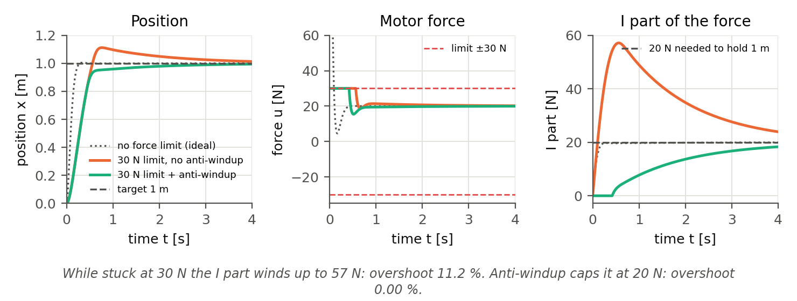
Fix — anti-windup (clamping, also called conditional integration; one of several methods): if the output is at its limit and the error would push it further the same way, stop adding to the integral.
Simple idea. D divides a change by a tiny time. Noise changes by about a millimetre every 1 ms, which looks like a speed of about 1 m/s.
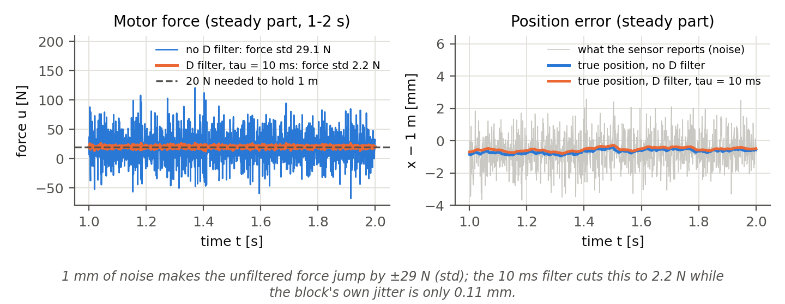
Fix — low-pass filter on D: smooth it with an exponential moving average (a first-order low-pass filter), Dnew = α·Dold + (1 − α)·Draw, α = τ/(τ + dt) = 0.01/0.011 = 0.91 (τ = 10 ms). Cost: settling 0.241 s → 0.277 s, because the brake reacts slightly later. Example: you don't stamp the brake at every flicker of the speedometer needle.
Simple idea. If the target jumps by 1 m in one 1 ms step, the error jumps too. D sees a "speed" of 1 m ÷ 0.001 s = 1000 m/s and multiplies it by Kd = 20: a 20,000 N spike for one step.
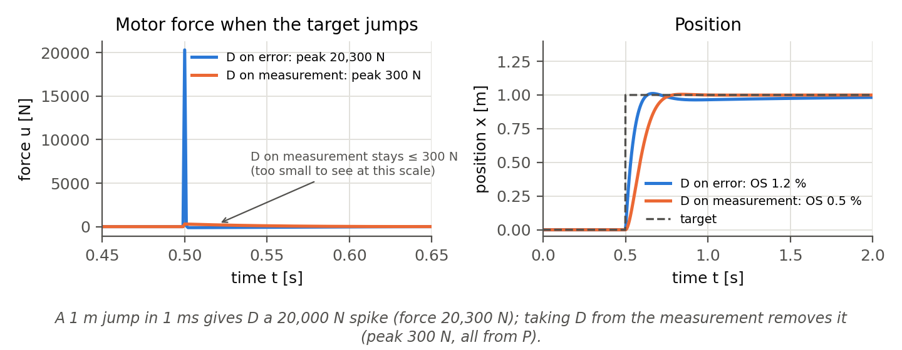
Fix — take D from the measurement: use −dy/dt instead of de/dt. When the target is steady these are identical (e = r − y, so de/dt = −dy/dt), but a target jump does not move the block, so there is no spike. (The kick does not appear at t = 0 because on its first step the controller has no previous value yet, so D starts at 0. That is why the jump is placed at 0.5 s.)
Simple idea. Between updates the controller holds its last push. A slow update means it reacts late, about half an update on average. Reacting late is like driving while looking at a photo taken a moment ago: you correct too late and swing past.
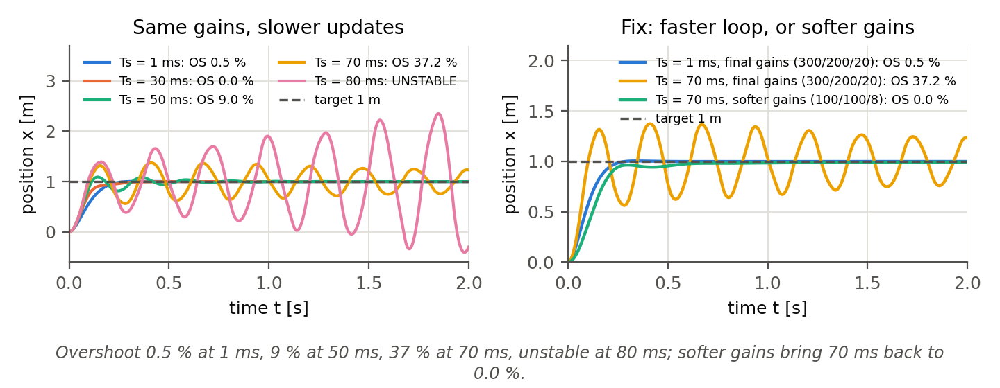
Fix: update faster. A common rule of thumb: at least 10 updates per rise time (rise 0.15 s → dt ≤ 15 ms). It is a starting point, not a guarantee: the safe interval also depends on the gains, delays and how fast the system moves. If the hardware cannot, use softer gains (slower but safe).
Simple idea. Find the P gain where the system is "on the edge" — it swings forever with the same size — then use a table to turn that into PID gains. Example: pushing a child on a swing exactly hard enough that the swing height stays the same. (This system is like three slow buckets in a row, each filling from the one before; s means "rate of change".)
Step 1 — P only, raise Kp. Swing size ratio (last swing ÷ second swing): Kp = 6 → 0.014 (dies out), 7 → 0.131, 8 → 1.135 (grows), 9 → 9.36. Halving the range between 7 and 9 fourteen times gives Ku = 7.94 and Pu = 3.640 s. Theory: the phase of 1/(jω + 1)³ is −180° when ω = √3 rad/s, where the size is 1/8, so Ku = 8 and Pu = 2π/√3 = 3.628 s. The 0.75 % gap is the late-reaction effect of the 5 ms update (Section 7d). Check: repeating the search with 20 / 10 / 5 / 2 / 1 ms updates gives Ku = 7.77 / 7.88 / 7.94 / 7.98 / 7.99, moving toward 8 as updates get faster.
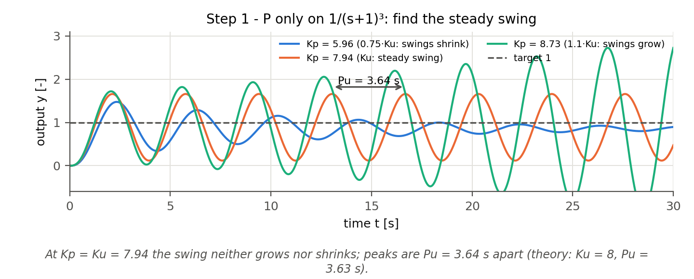
Step 2 — apply the table.
| Type | Kp | Ti | Td |
|---|---|---|---|
| P | 0.5 Ku | – | – |
| PI | 0.45 Ku | Pu/1.2 | – |
| PID | 0.6 Ku | Pu/2 | Pu/8 |
With Ki = Kp/Ti and Kd = Kp·Td: Kp = 4.76, Ki = 2.62, Kd = 2.17.
Step 3 — plot and improve.
| Gains | Overshoot | Settling |
|---|---|---|
| Z–N (4.76 / 2.62 / 2.17) | 52.3 % | 9.9 s |
| Improved PID (4.0 / 0.8 / 3.0) | 3.1 % | 3.4 s |
Z–N aims for each swing to be ¼ of the last one, so ~50 % overshoot is expected. I cut Ki by 3× (I was pushing too long during the slow rise), raised Kd for more braking, and lowered Kp a little.
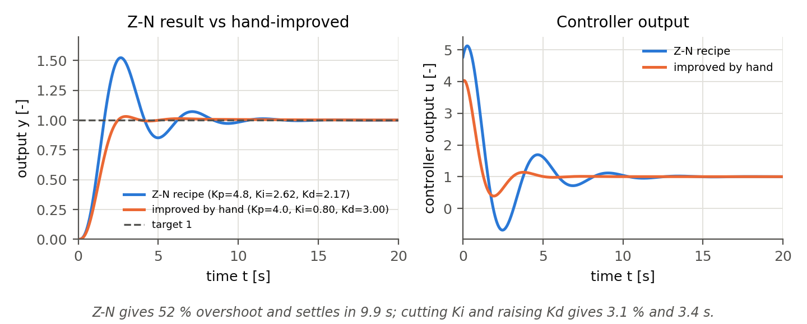
Simple idea. One reusable PID class (pid_control/pid.py) holds the gains and its memory (integral, previous values).
You call update(target, measurement) once every dt and it returns the force. Every Section 7 fix is a switch. Core of update():
error = setpoint - measurement # 1. how far are we?
p_term = self.kp * error # 2. P: push in proportion to the gap
if self.prev_error is None: d_raw = 0.0 # 3. D: no previous value on the first step
elif self.d_on_measurement: d_raw = -(measurement - self.prev_meas) / dt # fix (c): no kick
else: d_raw = (error - self.prev_error) / dt
alpha = self.d_filter_tau / (self.d_filter_tau + dt) # fix (b): smooth D (alpha = 0 -> no filter)
self.d_filtered = alpha * self.d_filtered + (1 - alpha) * d_raw
d_term = self.kd * self.d_filtered
new_integral = self.integral + error * dt # 4. I: add one rectangle of area
u_unclipped = p_term + self.ki * new_integral + d_term # 5. add the three parts
u = clip(u_unclipped, self.u_min, self.u_max) # fix (a): motor limit, e.g. +/-30 N
if not (self.anti_windup and u != u_unclipped and sign(error) == sign(u_unclipped)):
self.integral = new_integral # fix (a): anti-windup - only grow I if allowed
self.prev_error, self.prev_meas = error, measurement # 6. remember for next time
return u
Using it with all fixes on, in a realistic test: 30 N motor, 1 mm sensor noise, target 1 m, then a sudden jump to 0.5 m at t = 5 s:
pid = PID(kp=300, ki=200, kd=20, dt=0.001, u_min=-30, u_max=30,
anti_windup=True, d_filter_tau=0.01, d_on_measurement=True)
log = simulate(MassSpringDamper(), pid, target, t_end=8.0, noise_std=0.001, seed=1)
Output (printed by experiments/section09_full_demo.py):
t [s] target measured error P [N] I [N] D [N] u [N] 0.000 1.00 0.0003 0.9997 299.90 0.00 0.00 30.00 <- P wants 300 N, motor gives 30 0.200 1.00 0.3235 0.6765 202.95 0.00 -48.92 30.00 <- I frozen (anti-windup), D braking 1.000 1.00 0.9603 0.0397 11.90 8.02 -1.09 18.84 <- I building up towards 20 N 4.000 1.00 0.9950 0.0050 1.51 18.37 -0.79 19.10 5.000 0.50 0.9981 -0.4981 -149.44 19.17 -1.84 -30.00 <- target jumps: no D spike 8.000 0.50 0.5036 -0.0036 -1.09 10.62 -2.84 6.69 <- I heading to 10 N (= k x 0.5 m)
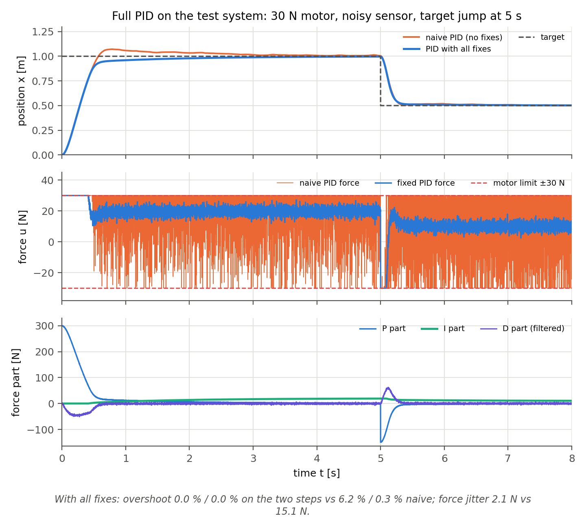
| Where | What is controlled | How PID is used |
|---|---|---|
| Motor speed (fans, conveyor belts, wheels) | speed from an encoder | Usually PI: I removes the speed gap caused by load and friction. Output = motor voltage, limited by the supply → anti-windup needed. |
| Drone | roll, pitch, yaw angle and rotation rate | Cascaded PIDs: an outer angle loop sets a target rate for a fast inner rate loop (hundreds of updates per second). The gyro is noisy, so the D part is filtered (Section 7b). |
| Robot arm | each joint angle | One PID per joint, often plus a "feedforward" term that adds the torque needed to hold the arm against gravity, just like our 20 N spring force, so I has less to do. |
| Line-following robot | sideways distance from the line (IR sensors) | Mostly PD: error = how far the line is from the centre; output = difference in left/right wheel speed. D stops it zig-zagging. |
| Car cruise control | vehicle speed | PI on speed → throttle. On a steep hill the throttle maxes out, so anti-windup stops a surge when the road flattens (Section 7a). |
| Myth | Reality (with evidence from this document) |
|---|---|
| "Higher gains always make it better." | Kp 10 → 300 cut the gap but overshoot rose 0.1 % → 40.7 % (Fig. 5a); with a slow 80 ms update the same gains go unstable (Fig. 7d). |
| "A big enough Kp removes the error." | The error is 20/(Kp + 20): smaller, never zero (0.063 m even at Kp = 300). Only I removes it. |
| "D reduces noise / more D is always calmer." | D amplifies noise: 1 mm of noise → 29 N of force jitter (Fig. 7b). And with I present, raising Kd from 20 to 40 actually raised overshoot from 0.5 % to 2.8 %: the slower rise lets I collect more error. |
| "Adding I is free." | I removes the gap but adds bounce (20 % → 49 % at Ki = 500, Fig. 5b) and winds up at force limits (57 N instead of 20 N, Fig. 7a). |
| "Ziegler–Nichols gives the final answer." | It gave 52 % overshoot; hand tuning cut it to 3.1 % (Fig. 8b). It is a starting point. |
| "PID needs an exact model of the machine." | Z–N tuning used only experiments (raise Kp, watch the swings). Models help, but PID works without one, which is why it is so widely used in industry. |
Next: (1) add feedforward (push k·r = 20 N straight away) so I only fixes small errors; (2) test robustness: mass or spring ±50 %; (3) try relay auto-tuning, a safer way to find Ku on real hardware; (4) run the same code on a real DC motor with an encoder.
I used Claude (Anthropic) as a writing assistant: to draft the simulator, the PID class, to check my derivations, and to suggest clear wording. I then ran every script myself, checked each result against the hand calculations shown above, and adjusted gains and explanations. Used chatgpt to verify my work. All numbers in this document come from my code's output.
References: K. J. Åström & R. M. Murray, Feedback Systems, Princeton (2008) · K. J. Åström & T. Hägglund, Advanced PID Control, ISA (2006) · J. G. Ziegler & N. B. Nichols, "Optimum settings for automatic controllers", Trans. ASME 64 (1942) · B. Beauregard, "Improving the Beginner's PID" (blog series, 2011).